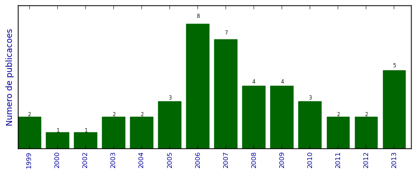

UFSM - Análise do Lattes
Trabalhos completos publicados em anais de congressos

Número total de itens: 46
(A1: 0, A2: 0, B1: 1, B2: 0, B3: 1, B4: 4, B5: 1, C: 0, Qualis não identificado: 39)
Legenda Qualis:
- Publicação para a qual o nome exato do Qualis foi identificado: Qualis <estrato>
- Publicação para a qual um nome similar (não exato) do Qualis foi identificado: Qualis <estrato> (nome similar)
- Publicação para a qual nenhum nome do Qualis foi identificado: Qualis não identificado (nome usado na busca)
2013
| 1. | CASSALES, G. W. ; HOFFMANN, G. F. ; VIEIRA, J. C. ; CHARAO, A. S.. Paralelização híbrida de cálculo de probabilidades utilizando redes bayesianas. Em: XII Simpósio de Informática da Unifra (SIRC 2013), p. 26-31, 2013. [ citações Google Scholar | citações Microsoft Acadêmico | busca Google ] Qualis: Não identificado (XII Simpósio de Informática da Unifra (SIRC 2013)) |
| 2. | GOMES, V. C. F. ; VELHO, H. F. C. ; CHARAO, A. S.. A Fast Poisson Solver for Hybrid Reconfigurable System. Em: 9th International Symposium on Applied Reconfigurable Computing, p. 47-58, 2013. [ citações Google Scholar | citações Microsoft Acadêmico | busca Google ] Qualis: B3 (International Workshop on Applied Reconfigurable Computing) |
| 3. | MOURA, J. L. ; LUNARDI, G. M. ; CHARAO, A. S. ; BARCELOS, P. P. A. ; STEIN, B. O.. Gestão de Processos de Negócio em Curso de Sistemas de Informação: Relato de Experiência Utilizando Software Livre. Em: IX Simpósio Brasileiro de Sistemas de Informação (SBSI), p. 206-217, 2013. [ citações Google Scholar | citações Microsoft Acadêmico | busca Google ] Qualis: B4 (Simpósio Brasileiro de Sistemas de Informação) |
| 4. | STEFFENEL, LUIZ ANGELO ; FLAUZAC, OLIVIER ; CHARAO, ANDREA SCHWERTNER ; BARCELOS, PATRICIA PITTHAN ; STEIN, BENHUR ; NESMACHNOW, SERGIO ; PINHEIRO, MANUELE KIRSCH ; DIAZ, DANIEL. PER-MARE: Adaptive Deployment of MapReduce over Pervasive Grids. Em: 2013 Eighth International Conference on P2P, p. 17, 2013.  [ citações Google Scholar | citações Microsoft Acadêmico | busca Google ] Qualis: Não identificado (2013 Eighth International Conference on P2P) |
| 5. | VIEIRA, J. C. ; CASSALES, G. W. ; FAE, F. ; CHARAO, A. S.. Paralelização de Ray Tracing utilizando Intel Cilk Plus. Em: XII Simpósio de Informática da Unifra (SIRC 2013), p. 14-19, 2013. [ citações Google Scholar | citações Microsoft Acadêmico | busca Google ] Qualis: Não identificado (XII Simpósio de Informática da Unifra (SIRC 2013)) |
2012
| 1. | BARBOSA, F. P. ; CHARAO, A. S.. Impact of pay-as-you-go Cloud Platforms on Software Pricing and Development: A Review and Case Study. Em: ICCSA 2012 - 12th International Conference on Computational Science and Its Applications, v. 7336, p. 404-417, 2012. [ citações Google Scholar | citações Microsoft Acadêmico | busca Google ] Qualis: B1 (International Conference on Computational Science and its Applications) |
| 2. | TIETZMANN, D. K. ; CHARAO, A. S. ; BEAL JUNIOR, J. C.. Uma extensão do Eclipse para auxiliar na refatoração de código sequencial em código paralelo com OpenMP. Em: Workshop de Software Livre, 2012. [ citações Google Scholar | citações Microsoft Acadêmico | busca Google ] Qualis: Não identificado (Workshop de Software Livre) |
2011
| 1. | BARBOSA, F. P. ; CHARAO, A. S.. Uma análise do impacto das plataformas pay-as-you-go de computação em nuvem na construção e precificação de software. Em: CLEI 2011 - Conferencia Latinoamericana de Informática, 2011. [ citações Google Scholar | citações Microsoft Acadêmico | busca Google ] Qualis: B4 (Conferencia Latinoamericana de Informática) |
| 2. | TIETZMANN, D. K. ; RISSETTI, G. ; CHARAO, A. S. ; PIVETA, E. K. ; PETRY, A. ; SOUZA, J. R.. Refatorações para Melhoria da Legibilidade de Código Fortran. Em: WSL'11 - Workshop de Software Livre, 2011. [ citações Google Scholar | citações Microsoft Acadêmico | busca Google ] Qualis: Não identificado (WSL'11 - Workshop de Software Livre) |
2010
| 1. | BONIATI, B. B. ; RISSETTI, G. ; CHARAO, A. S. ; PIVETA, E. K.. Extensões para Refatoração de Código Fortran no Eclipse. Em: Workshop de Software Livre, p. 74-79, 2010. [ citações Google Scholar | citações Microsoft Acadêmico | busca Google ] Qualis: Não identificado (Workshop de Software Livre) |
| 2. | CARISSIMI, A. S. ; GEYER, C. F. R. ; MAILLARD, N. B. ; NAVAUX, P. O. A. ; CAVALHEIRO, G. G. H. ; PILLA, M. L. ; YAMIN, A. ; CHARAO, A. S. ; STEIN, B. O. ; ROSE, C. A. ; FERNANDES, G. ; FERRETO, T. ; ZORZO, A.. Energy-Aware Scheduling of Parallel Programs. Em: Conferencia Latino Americana de Computación de Alto Rendimiento, p. 95-108, 2010. [ citações Google Scholar | citações Microsoft Acadêmico | busca Google ] Qualis: Não identificado (Conferencia Latino Americana de Computación de Alto Rendimiento) |
| 3. | PEREIRA, A. ; PINTO, V. G. ; CHARAO, A. S.. CertificaPET: Sistema Gerenciador de Certificados de Eventos em Formato Digital. Em: Workshop de Software Livre, p. 94-99, 2010. [ citações Google Scholar | citações Microsoft Acadêmico | busca Google ] Qualis: Não identificado (Workshop de Software Livre) |
2009
| 1. | BONIATI, B. B. ; CHARAO, A. S. ; STEIN, B. O.. Automação de Refatorações para Programas Fortran de Alto Desempenho. Em: Simpósio de Sistemas Computacionais de Alto Desempenho - WSCAD-SSC, 2009. [ citações Google Scholar | citações Microsoft Acadêmico | busca Google ] Qualis: Não identificado (Simpósio de Sistemas Computacionais de Alto Desempenho - WSCAD-SSC) |
| 2. | KREUTZ, D. L. ; CHARAO, A. S.. FlexVAPs: a system for managing virtual appliances for heterogeneous virtualized environments. Em: IEEE/IFIP 6th Latin American Network Operations and Management Symposium, p. 1-12, 2009. [ citações Google Scholar | citações Microsoft Acadêmico | busca Google ] Qualis: B4 (Latin American Network Operations and Management Symposium) |
| 3. | PEREIRA, A. ; COGO, V. V. ; CHARAO, A. S.. Frameworks para Desenvolvimento Rápido de Aplicações Web: um Estudo de Caso com CakePHP e Django. Em: Workshop de Software Livre, 2009. [ citações Google Scholar | citações Microsoft Acadêmico | busca Google ] Qualis: Não identificado (Workshop de Software Livre) |
| 4. | SOUTO, R. P. ; PAES, F. F. ; VELHO, H. F. C. ; STEPHANY, S. ; PRETO, A. J. ; CHARAO, A. S. ; VIZZOTTO, J. K. ; NAVAUX, P. O. A. ; MAILLARD, N. B.. Method for multi-spectral tomographic reconstruction of chlorophyll concentration for ocean water. Em: XIV Simpósio Brasileiro de Sensoriamento Remoto (XIV SBSR), p. 6665-6672, 2009. [ citações Google Scholar | citações Microsoft Acadêmico | busca Google ] Qualis: Não identificado (XIV Simpósio Brasileiro de Sensoriamento Remoto (XIV SBSR)) |
2008
| 1. | COGO, V. V. ; VIERA, M. A. ; TESSER, R. K. ; BEVILACQUA, F. ; CHARAO, A. S.. Projeto e Implementação de um Mural Digital com Reaproveitamento de Computadores Obsoletos. Em: Workshop de Software Livre, 2008. [ citações Google Scholar | citações Microsoft Acadêmico | busca Google ] Qualis: Não identificado (Workshop de Software Livre) |
| 2. | FOGLIATTO, J. A. ; SANTOS, A. K. ; CHARAO, A. S.. Uma Metodologia para Oficinas de Inclusão Digital com Público-Alvo Heterogêneo. Em: Simpósio de Informática da Região Centro do RS (SIRC/RS), 2008. [ citações Google Scholar | citações Microsoft Acadêmico | busca Google ] Qualis: Não identificado (Simpósio de Informática da Região Centro do RS (SIRC/RS)) |
| 3. | KOSLOVSKI, G. P. ; PRIMET, P. V. ; CHARAO, A. S.. VXDL: Virtual Resources and Interconnection Networks Description Language. Em: Second International Conference on Networks for Grid Applications - GridNets 2008, 2008. [ citações Google Scholar | citações Microsoft Acadêmico | busca Google ] Qualis: Não identificado (Second International Conference on Networks for Grid Applications - GridNets 2008) |
| 4. | SANTOS, R. C. M. ; CHARAO, A. S.. Análise Comparativa de Desempenho do Hipervisor Xen: Paravirtualização versus Virtualização Total. Em: Simpósio de Sistemas Computacionais de Alto Desempenho - WSCAD-SSC, 2008. [ citações Google Scholar | citações Microsoft Acadêmico | busca Google ] Qualis: Não identificado (Simpósio de Sistemas Computacionais de Alto Desempenho - WSCAD-SSC) |
2007
| 1. | BEVILACQUA, F. ; POZZER, C. T. ; CHARAO, A. S.. Análise da Plataforma J2ME através de um estudo de caso na área de jogos multiplayer. Em: VI Simpósio Brasileiro de Jogos para Computador e Entretenimento Digital, 2007. [ citações Google Scholar | citações Microsoft Acadêmico | busca Google ] Qualis: B4 (Simpósio Brasileiro de Jogos e Entretenimento Digital) |
| 2. | KOSLOVSKI, G. P. ; BOUFLEUR, M. P. ; CHARAO, A. S.. Módulo de Descoberta Automática de Monitores de Máquinas Virtuais Xen. Em: VIII Workshop de Software Livre, 2007. [ citações Google Scholar | citações Microsoft Acadêmico | busca Google ] Qualis: Não identificado (VIII Workshop de Software Livre) |
| 3. | KOSLOVSKI, G. P. ; BOUFLEUR, M. P. ; CHARAO, A. S.. AdXen: Uma Ferramenta para Administração de Arquiteturas Virtualizadas Distribuídas Baseadas em Xen. Em: VIII Workshop em Sistemas Computacionais de Alto Desempenho, 2007. [ citações Google Scholar | citações Microsoft Acadêmico | busca Google ] Qualis: Não identificado (VIII Workshop em Sistemas Computacionais de Alto Desempenho) |
| 4. | KREUTZ, D. L. ; NEVES, M. V. ; MATHIAS, E. N. ; SCHEID, T. ; CHARAO, A. S.. A Peer-to-Peer Architecture for Automatic Software Package Installation on Heterogeneous Clusters. Em: CLEI 2007 - XXXIII Latin American Conference on Informatics, 2007. [ citações Google Scholar | citações Microsoft Acadêmico | busca Google ] Qualis: Não identificado (CLEI 2007 - XXXIII Latin American Conference on Informatics) |
| 5. | OLIVEIRA, R. L. ; REIS, T. A. ; VIERA, M. A. ; CHARAO, A. S.. Avaliação do Suporte à Programação Multithread com OpenMP no Compilador GCC. Em: VIII Workshop de Software Livre, 2007. [ citações Google Scholar | citações Microsoft Acadêmico | busca Google ] Qualis: Não identificado (VIII Workshop de Software Livre) |
| 6. | REIS, T. A. ; BOUFLEUR, M. P. ; VIZZOTTO, J. K. ; VELHO, H. F. C. ; CHARAO, A. S.. Automatização da Criação de Mapas com o Google Maps. Em: VI Simpósio de Informática da Região Centro do RS, 2007. [ citações Google Scholar | citações Microsoft Acadêmico | busca Google ] Qualis: Não identificado (VI Simpósio de Informática da Região Centro do RS) |
| 7. | SCHMIDT, A. H. ; SANTOS, R. C. M. ; BOUFLEUR, M. P. ; CHARAO, A. S.. Análise de Desempenho da Virtualização de Rede nos Sistemas Xen e OpenVZ. Em: V ERRC - Escola Regional de Redes de Computadores, 2007. [ citações Google Scholar | citações Microsoft Acadêmico | busca Google ] Qualis: Não identificado (V ERRC - Escola Regional de Redes de Computadores) |
2006
| 1. | BOUFLEUR, M. P. ; KOSLOVSKI, G. P. ; CHARAO, A. S.. Avaliação do Uso de Xen em Ambientes de Computação de Alto Desempenho. Em: Workshop de Sistemas Computacionais de Alto Desempenho, 2006. [ citações Google Scholar | citações Microsoft Acadêmico | busca Google ] Qualis: Não identificado (Workshop de Sistemas Computacionais de Alto Desempenho) |
| 2. | BOUFLEUR, M. P. ; KOSLOVSKI, G. P. ; CHARAO, A. S.. Uso de Virtualização de Recursos Computacionais na Administração de Redes. Em: Escola Regional de Redes de Computadores, 2006. [ citações Google Scholar | citações Microsoft Acadêmico | busca Google ] Qualis: Não identificado (Escola Regional de Redes de Computadores) |
| 3. | BOUFLEUR, M. P. ; KOSLOVSKI, G. P. ; CHARAO, A. S.. Avaliação do Desempenho da Migração de Máquinas Virtuais em Xen. Em: Simpósio de Informática da Região Centro do RS (SIRC/RS), 2006. [ citações Google Scholar | citações Microsoft Acadêmico | busca Google ] Qualis: Não identificado (Simpósio de Informática da Região Centro do RS (SIRC/RS)) |
| 4. | KREUTZ, D. L. ; NEVES, M. V. ; MATHIAS, E. N. ; SCHEID, T. ; CHARAO, A. S. ; RIGHI, R.. Clumpt: Um Sistema Peer-to-Peer para Instalação e Manutenção de Software em Aglomerados de Computadores. Em: Workshop de Peer-to-Peer (WP2P), 2006. [ citações Google Scholar | citações Microsoft Acadêmico | busca Google ] Qualis: B5 (Workshop de Peer to Peer) |
| 5. | LUCCA, G. ; CHARAO, A. S. ; STEIN, B. O.. Um Modelo de Dados para uma Ferramenta de Gerenciamento Eletrônico de Documentos Arquivísticos. Em: Congresso Nacional de Arquivologia, 2006. [ citações Google Scholar | citações Microsoft Acadêmico | busca Google ] Qualis: Não identificado (Congresso Nacional de Arquivologia) |
| 6. | LUCCA, G. ; CHARAO, A. S. ; STEIN, B. O.. Projeto de uma Ferramenta para Gerenciamento Eletrônico de Documentos Arquivísticos Baseada em Software Livre. Em: Encontro Nacional de Engenharia de Produção (ENEGEP), 2006. [ citações Google Scholar | citações Microsoft Acadêmico | busca Google ] Qualis: Não identificado (Encontro Nacional de Engenharia de Produção (ENEGEP)) |
| 7. | NEVES, M. V. ; SCHEID, T. ; CHARAO, A. S.. Paralelização de uma Aplicação para Análise de Dados Micrometeorológicos Utilizando uma Abordagem Peer-to-Peer. Em: Simpósio de Informática da Região Centro do RS, 2006. [ citações Google Scholar | citações Microsoft Acadêmico | busca Google ] Qualis: Não identificado (Simpósio de Informática da Região Centro do RS) |
| 8. | VICENTINI, C. F. ; CAFARATE, L. S. ; MAZZANTI, E. S. ; CHARAO, A. S.. Utilização de Tecnologias Web para Preservação e Difusão de uma Publicação Histórica sobre a Cidade de Santa Maria. Em: Simpósio de Informática da Região Centro do RS, 2006. [ citações Google Scholar | citações Microsoft Acadêmico | busca Google ] Qualis: Não identificado (Simpósio de Informática da Região Centro do RS) |
2005
| 1. | MATHIAS, E. N. ; NEVES, M. V. ; ARAUJO NETO, E. P. ; CHARAO, A. S. ; PASIN, M.. Extensão da Ferramenta IC2D para Monitoração de Carga em Clusters e Grids de Computadores. Em: IV Simpósio de Informática da Região Centro do RS, 2005. [ citações Google Scholar | citações Microsoft Acadêmico | busca Google ] Qualis: Não identificado (IV Simpósio de Informática da Região Centro do RS) |
| 2. | NEVES, M. V. ; SCHEID, T. ; CHARAO, A. S.. Monitoração de clusters com a ferramenta Ganglia: avaliação e adaptação. Em: WSL2005 - Sexto Workshop Software Livre 2005, 2005. [ citações Google Scholar | citações Microsoft Acadêmico | busca Google ] Qualis: Não identificado (WSL2005 - Sexto Workshop Software Livre 2005) |
| 3. | NEVES, M. V. ; SCHEID, T. ; MATHIAS, E. N. ; ARAUJO NETO, E. P. ; CHARAO, A. S.. Comparação entre Plataformas Peer-to-Peer para Desenvolvimento de Aplicações de Computação Distribuída. Em: IV Simpósio de Informática da Região Centro do RS, 2005. [ citações Google Scholar | citações Microsoft Acadêmico | busca Google ] Qualis: Não identificado (IV Simpósio de Informática da Região Centro do RS) |
2004
| 1. | NEVES, M. V. ; SCHEID, T. ; SCHNORR, L. M. ; CHARAO, A. S.. Integração de Ganglia, libRastro e Pajé para o Monitoramento de Aplicações Paralelas. Em: Quinto Workshop em Sistemas Computacionais de Alto Desempenho, p. 35-41, 2004. [ citações Google Scholar | citações Microsoft Acadêmico | busca Google ] Qualis: Não identificado (Quinto Workshop em Sistemas Computacionais de Alto Desempenho) |
| 2. | SCHEPKE, C. ; CHARAO, A. S.. Utilizando a Biblioteca JMP em Arquiteturas de Memória Compartilhada. Em: III Simpósio de Informática da Região Centro do RS, 2004. [ citações Google Scholar | citações Microsoft Acadêmico | busca Google ] Qualis: Não identificado (III Simpósio de Informática da Região Centro do RS) |
2003
| 1. | BECK, D. A. ; CHARAO, A. S.. Gerenciamento Eletrônico de Documentos e o Uso de Software Livre em Arquivologia. Em: Encontro Nacional de Estudantes de Arquivologia, 2003. [ citações Google Scholar | citações Microsoft Acadêmico | busca Google ] Qualis: Não identificado (Encontro Nacional de Estudantes de Arquivologia) |
| 2. | SANTOS, F. C. ; CHARAO, A. S. ; FLORES, D.. Análise de Produtos para Gerenciamento Eletrônico de Documentos. Em: IV CINFORM - Encontro Nacional de Ciência da Informação, v. 4, p. 119-128, 2003. [ citações Google Scholar | citações Microsoft Acadêmico | busca Google ] Qualis: Não identificado (IV CINFORM - Encontro Nacional de Ciência da Informação) |
2002
| 1. | CHARAO, A. S. ; CHARPENTIER, I. ; PLATEAU, B. ; STEIN, B. O.. Generic parallel multithreaded programming of domain decomposition methods on PC clusters. Em: 14th International Conference on Domain Decomposition Methods, 2002. [ citações Google Scholar | citações Microsoft Acadêmico | busca Google ] Qualis: Não identificado (14th International Conference on Domain Decomposition Methods) |
2000
| 1. | ABDALLAH, A. B. ; CHARAO, A. S. ; CHARPENTIER, I. ; PLATEAU, B.. Ahpik: A Parallel Multithreaded Framework using Adaptivity and Domain Decomposition Methods for Solving PDE Problems. Em: 13th International Conference on Domain Decomposition Methods, 2000. [ citações Google Scholar | citações Microsoft Acadêmico | busca Google ] Qualis: Não identificado (13th International Conference on Domain Decomposition Methods) |
1999
| 1. | CHARAO, A. S. ; CHARPENTIER, I. ; PLATEAU, B.. A Framework for Parallel Multithreaded Implementation of Domain Decomposition Methods. Em: ParCo'99, p. 95-102, 1999. [ citações Google Scholar | citações Microsoft Acadêmico | busca Google ] Qualis: Não identificado (ParCo'99) |
| 2. | CHARAO, A. S. ; CHARPENTIER, I. ; PLATEAU, B.. Un environnement modulaire pour l'exploitation des processus légers dans les méthodes de décomposition de domaine. Em: RenPar'99, p. 145-150, 1999. [ citações Google Scholar | citações Microsoft Acadêmico | busca Google ] Qualis: Não identificado (RenPar'99) |
(*) Relatório criado com produções desde 1999 até HOJE
Data de processamento: 02/04/2014 18:15:43